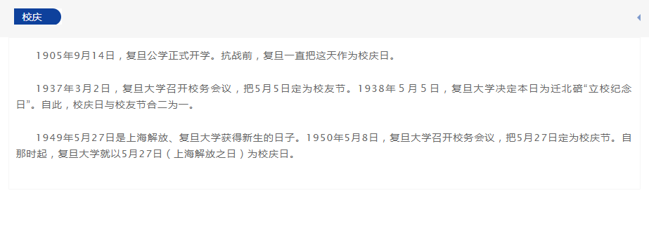

校友简介
美国宾夕法尼亚大学经济系教授。方汉明教授的主要研究领域为公共经济学和劳动力经济学。他是美国经济学界在应用微观经济学领域的带头人之一；现任公共经济学期刊和国际经济评论共同主编，和多家其他期刊，包括际顶尖经济学期刊美国经济评论的编委。他研究兴趣广泛，研究方法上擅长将理论和实证紧密结合。 他的具体研究课题包括歧视经济学的理论和实证方法，社会保障体制包括医疗保险市场和穷人福利制度的理论和实证的研究，人寿保险市场和社会经济学等方面。他在医疗保险市场和歧视经济学的研究成果影响深远。在歧视经济学方面，他的研究提供了区分基于偏见（prejudice ）和统计性歧视(Statistical Discrimination)的实证方法，并被法学界应用。他在医疗保险市场方面的研究获得了国际卫生经济学会颁发的每年一度的最佳健康经济学肯尼斯.阿罗大奖。 他的研究得到美国国家科学基金和美国国家医疗研究基金的资助。 他还是美国国家经济研究局（National Bureau of Economic Research）和宾夕法尼亚大学人口研究所的研究员。
珍惜
不要太看重一两门课的成绩，而要重视培养自己批评性思维的习惯及开阔的视野。此外，也不要小看同学之间的情谊，毕竟你的同学可能会是你终生的朋友。
祝愿复旦下一个 112 年比上一个 112 年为世界培养更多正直、多能、有为的人才。
2017 年 5 月 6 日，魏尚进教授回到复旦，和焦扬书记、经济学院的张军院长等老师见面，交流了关于培养金融行业人才及智库建设的国内与国际经验。
校友简介
现为美国教授、曾任亚洲开发银行首席经济学家。同时还担任美国布鲁金斯研究所高级研究员、美国国民经济研究局中国经济研究组主任。曾经担任肯尼迪学院副教授及助理教授（1992-2000）、布鲁金斯研究所国际经济学新世纪讲席高级研究员（1999-2001）、顾问（1999-2000）。另外，魏尚进教授还担任Journal of International Economics、Journal of Development Economics、Journal of International Financial Markets、Institutions & Money等学术期刊的副主编和The China Economic Review的顾问编委。
祝福
校友简介
北京大学光华管理学院讲席教授，博导，北京大学国家金融研究中心主任，北京大学管理案例研究中心主任，光华管理学院副院长，国家级千人计划获得者。曾任哈佛商学院金融教授兼哈佛大学费正清东亚研究中心执行理事，现兼任牛津大学商学院金融教授（终身教职正教授兼博导），牛津大学中国中心研究员。他同时担任哈佛－牛津－北大“民营及家族企业未来领袖项目”的创始联席主任。他是国际知名的公司治理问题专家，全球公司治理协会（GCGC）理事会和学术委员会成员，中国区代表，并且在多家国内外学术以及实务机构担任高级顾问或理事。